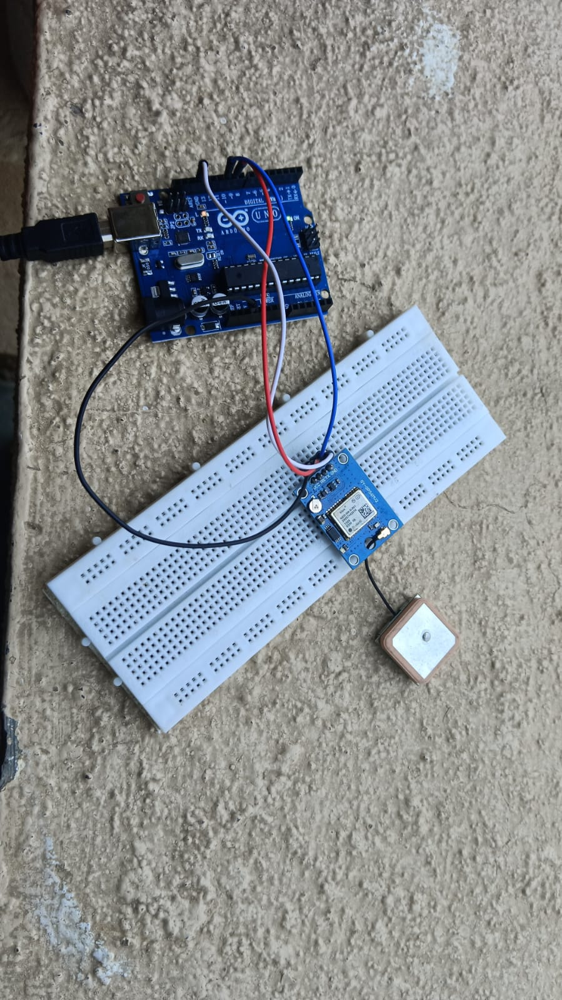
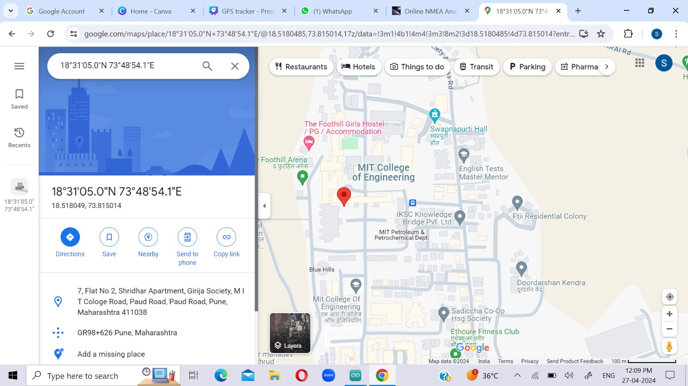

Overview
A simple GPS tracking system using Arduino Uno and a GPS module to display real-time coordinates directly in the Arduino IDE's Serial Monitor.
Project Setup


Features
- Displays latitude and longitude in real-time
- Uses GPS satellite data
- No internet or IoT platform required
Tech Stack
Arduino Uno, GPS Module (NEO-6M), Arduino IDE
My Contribution
Assembled hardware connections, wrote the Arduino code for parsing GPS data, and tested real-time location output through Serial Monitor.